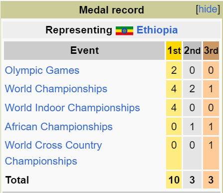
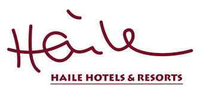

Haile Gebreselassie
Athlete &
Bussinessman

About Haile
Haile Gebrselassie is an Ethiopian former long-distance track, road running athlete, and businessman. He won two Olympic gold medals and four World Championship titles over the 10,000 metres .
Haile triumphed in the Berlin Marathon four times consecutively and also had three straight wins at the Dubai Marathon. He also earned four world titles indoors and was the 2001 World Half Marathon Champion.
Haile had major competition wins at distances between 1,500 metres and the marathon, moving from outdoor, indoor and cross country running to road running in the latter part of his career. He broke 61 Ethiopian national records, ranging from 800 metres to the marathon, set 27 world records, and is regarded as one of the greatest long distance runners in history. He won the 2008 Berlin Marathon with a world record time of 2:03:59, breaking his own world record by 27 seconds. The record stood for three years. Haile's 10,000 m Masters age group world record remains unchallenged since 2008. Due to his various achievements on track & road running events, many called him as the "Emperor of the Distance Running".
Haile was cited as one of the top 100 most influential Africans by New African in 2011.

Haile's achivement in athletics
Haile Gebrselassie is considered one of the greatest runners in history, with victories and world records in almost every long-distance and middle-distance event. this is some of his medal achivement.

Haile's business
Haile Gebrselassie ventured into an entrepreneurship career in 1995, investing earnings from his sporting achievements that led to establishing companies. Until recent years, he has had 600 staff and offices every day. In 2010, Haile opened Haile Resorts in Lake Hawassa, and the resort quickly expanded to include destinations in Amhara, Oromia, Southern Nations, Nationalities, and People's Region. He recently inaugurated the Grand Haile Resort in Addis Ababa headquartered in Lam Beret. Haile has a dealership for Hyundai cars in Ethiopia and started assembling Hyundai electric cars in 2020.
Haile owned Marathon Motors, a vehicle business that also assembles Hyundai cars, and which recently rolled off the first electric car from its assembly plant. Haile owned several businesses and is involved in real estate projects and owns four hotels, a coffee plantation. In 2015, there was estimated 1,000 employees and reached 3,000 employees across his investments in Ethiopia and beyond. Haile currently received 30 million birr revenue from various businesses.
haile's Hotels & Resorts
haile have many hoteles and resorts in Ethiopia. there are more than 10 resorts in Ethiopia. The chain has expanded significantly since its inception in 2010, with the latest addition being the Haile Grand Hotel in Addis Ababa, which opened in 2020
Some of the resorts
Haile Resort - Addis Ababa , is the latest and 7th addition to the chain (Haile Hospitality Group) built in the vibrant city of Adama. The resort features :- 106 spacious rooms, 7 Multipurpose halls , Swimming pool, Spa, Massage, Gym, Restaurants, Bars and multipurpose play grounds.
Haile Resort - Addis Ababa
Haile Resort - Adama , is the latest and 7th addition to the chain (Haile Hospitality Group) built in the vibrant city of Adama. The resort features :- 106 spacious rooms, 7 Multipurpose halls , Swimming pool, Spa, Massage, Gym, Restaurants, Bars and multipurpose play grounds.
Haile Resort - Adama
Haile Resort - Gonder , is the latest and 7th addition to the chain (Haile Hospitality Group) built in the vibrant city of Adama. The resort features :- 106 spacious rooms, 7 Multipurpose halls , Swimming pool, Spa, Massage, Gym, Restaurants, Bars and multipurpose play grounds.
Haile Resort - Gonder
Haile Resort - Arba-Minch , is the latest and 7th addition to the chain (Haile Hospitality Group) built in the vibrant city of Adama. The resort features :- 106 spacious rooms, 7 Multipurpose halls , Swimming pool, Spa, Massage, Gym, Restaurants, Bars and multipurpose play grounds.
Haile Resort - Arba-Minch

Haile Resort - Hawassa , is the latest and 7th addition to the chain (Haile Hospitality Group) built in the vibrant city of Adama. The resort features :- 106 spacious rooms, 7 Multipurpose halls , Swimming pool, Spa, Massage, Gym, Restaurants, Bars and multipurpose play grounds.
Haile Resort - Hawassa
Haile Resort - Ziway , is the latest and 7th addition to the chain (Haile Hospitality Group) built in the vibrant city of Adama. The resort features :- 106 spacious rooms, 7 Multipurpose halls , Swimming pool, Spa, Massage, Gym, Restaurants, Bars and multipurpose play grounds.